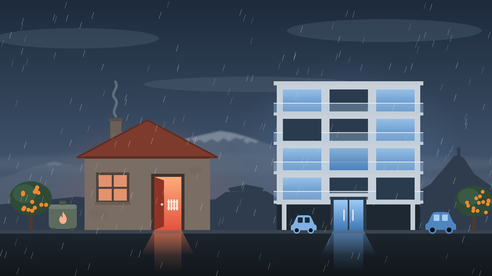

Η ακρίβεια δεν μπαίνει σε κάθε νοικοκυριό από την ίδια πόρτα
Rising prices do not enter every household through the same door
Ο πληθωρισμός είναι σχεδόν ίδιος για φτωχότερα και πλουσιότερα νοικοκυριά (4,8% έναντι 5,0%), αλλά στα φτωχότερα σχεδόν επτά στις δέκα μονάδες έρχονται από τη στέγαση και την ενέργεια.
Inflation is almost the same for poorer and richer households (4.8% vs 5.0%), but for the poorest almost seven in ten points come from housing and energy.